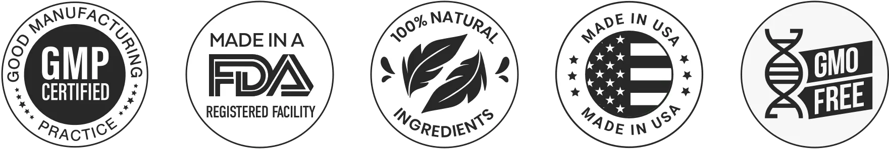

Burn Peak is a Natural Supplement for Fat Burning and Energy Support
Burn Peak is a natural weight loss support
supplement created for individuals who struggle with weight gain
due to slow metabolism, low energy levels, and stubborn body fat.
In today’s lifestyle, poor eating habits, stress, and limited
physical activity make it increasingly difficult to maintain a
healthy weight.
The Burn Peak supplement for weight loss is
designed to support the body’s internal weight-management
processes rather than offering short-term or extreme solutions. By
focusing on metabolism, fat utilization, appetite balance, and
daily energy, it aims to support gradual and sustainable weight
loss for both men and women.

What is Burn Peak?
Burn Peak is a premium dietary supplement
specifically designed to support individuals in their weight loss
journey by targeting multiple underlying factors that make losing
weight challenging. Unlike traditional fat burners or extreme diet
programs, Burn Peak supplement works with the body’s natural
processes to enhance metabolism, promote fat utilization, and
regulate appetite. By focusing on these core areas, it helps users
achieve gradual, sustainable, and healthy weight loss rather than
offering temporary results that are difficult to maintain.
The supplement is carefully formulated to be suitable for both men
and women, taking into account differences in metabolism, energy
levels, and fat distribution. Many people struggle with stubborn fat
that accumulates around the belly, hips, and thighs despite regular
dieting or exercise. it addresses this issue by supporting the
body’s ability to access stored fat and convert it into usable
energy, which can help reduce these hard-to-lose areas over time.
In addition to fat-burning support, it also helps manage appetite
and cravings. Uncontrolled hunger and frequent snacking are major
obstacles to weight loss for many individuals. Burn Peak’s formula
supports appetite balance, making it easier for users to maintain
portion control and stick to healthier eating habits without feeling
deprived.
Another key feature of Burn Peak is its ability to support energy
levels throughout the day. Low energy is a common reason people
struggle to stay active, and it often slows down metabolism further.
Burn Peak promotes steady, natural energy without the jitters or
crashes associated with stimulant-heavy supplements, helping users
remain active, productive, and motivated.
Burn Peak weight loss supplement is designed to complement a healthy
lifestyle rather than replace it. Consistent use, when combined with
balanced meals, adequate hydration, and light physical activity,
maximizes the supplement’s effectiveness. This approach ensures that
users do not have to rely on extreme diets or intensive workouts to
see results.
Overall, Burn Peak provides a holistic approach to weight management
by addressing multiple factors simultaneously — metabolism, fat
storage, appetite control, and energy support. This makes it an
ideal choice for those seeking a natural, effective, and long-term
solution to achieve their weight loss goals while improving overall
health and well-being.
How Does Burn Peak Work?
Burn Peak Supplement works by targeting the key
internal processes that affect weight management, providing a
comprehensive approach rather than focusing on just one aspect. The
supplement is designed to support the body’s natural fat-burning
mechanisms, enhance metabolic efficiency, regulate appetite, boost
energy levels, and improve digestive health. By addressing these areas
together, Burn Peak helps users achieve gradual and sustainable weight
loss while supporting overall well-being.
Supports Natural Fat Burning: It helps the body access
stored fat and convert it into energy. This process is crucial for
reducing stubborn fat areas, such as the belly and thighs, which often
resist traditional diet and exercise methods. By enhancing fat
utilization, Burn Peak supports gradual and safe weight loss over time.
Improves Metabolic Efficiency: A well-functioning
metabolism is essential for effective weight management. Burn Peak
supports metabolic activity, helping the body burn calories more
efficiently throughout the day. Improved metabolism reduces the chances
of excess calories being stored as fat and supports overall energy
balance.
Helps Balance Appetite and Cravings: Uncontrolled
hunger and frequent cravings can sabotage weight-loss efforts. Burn Peak
advanced weight loss support appetite regulation, helping users feel
fuller for longer periods. This makes it easier to control portion
sizes, stick to a healthy diet, and reduce the temptation to snack on
high-calorie foods.
Supports Energy Levels Throughout the Day: Low energy
can make it difficult to stay active, slowing weight loss progress. Burn
Peak supplement promotes steady, natural energy, helping users remain
productive and motivated without the spikes and crashes associated with
stimulant-heavy supplements. This energy boost encourages consistent
physical activity and daily movement.
Promotes Digestive and Gut Balance: Healthy digestion
is essential for efficient nutrient absorption and overall comfort. Burn
Peak supports digestive balance, which may help reduce bloating and
digestive discomfort. A well-functioning gut also contributes to better
metabolism and fat processing, supporting the overall weight-loss
journey.
Don't Miss Out on Your Chance to Save on Burn Peak?
Claim Your Discounted Burn Peak Well While Stocks Last!
Burn Peak has completely changed my routine—I’ve lost stubborn belly
fat, my cravings are gone, and I feel more energized than ever. It’s
the first natural supplement that actually delivers safe, consistent
results.
“A True Game-Changer”
Just one month into BurnPeak and my metabolism feels completely
recharged. I’m finally losing weight in problem areas that never
seemed to budge. If you want a natural fat burner that works, this
is it.
“Exactly What I Needed”
As a busy mom, I wanted something safe but effective. BurnPeak
helped me control my appetite, shed extra weight, and still have the
energy to keep up with my day. It’s by far the best weight loss
support I’ve tried.
Try Burn Peak Risk-Free – 60-Day Money Back Guarantee
We believe in Burn Peak’s ability to transform your health and
weight loss journey. That’s why every order is backed by our
60-day, no questions asked, money-back guarantee.
If you’re not completely satisfied—whether it’s your energy
levels, fat loss, or overall results—simply reach out within 60
days and you’ll receive a full refund. No hassle. No risk.
With its safe, natural formula and proven effectiveness, Burn Peak
gives you everything to gain and nothing to lose. Start your
journey today with complete confidence.
Burn Peak comes with a 100% satisfaction, 60-day money-back
guarantee, allowing you to try it completely risk-free. Start
taking BurnPeak and you may notice increased energy, reduced
bloating, improved digestion, and gradual fat loss within days.
Key Benefits of Burn Peak
Burn Peak weight loss supplement offers multiple
benefits that make it more than just a standard weight loss
supplement. Its unique formula targets several aspects of weight
management, including metabolism, fat burning, appetite control, and
energy support. Consistent use can help individuals achieve gradual
and sustainable weight loss while also improving overall well-being.
✅ Gradual and Sustainable Weight Loss: It promotes
steady weight loss by supporting the body’s natural fat-burning
processes. Unlike extreme diets or quick-fix solutions, it
encourages safe and gradual progress, which is easier to maintain
over the long term. This approach helps prevent rapid weight regain
and allows the body to adjust to a healthier weight naturally.
✅ Reduction in Stubborn Body Fat: Stubborn fat,
particularly around the belly, hips, and thighs, is often resistant
to diet and exercise. Burn Peak weight loss supplement supports fat
utilization in these problem areas, helping reduce excess fat over
time. By targeting fat storage at its source, the supplement makes
gradual body transformation more achievable.
✅ Improved Metabolism and Energy: A slow
metabolism can hinder weight-loss efforts and leave you feeling
fatigued. A supplement enhances metabolic efficiency, allowing the
body to burn calories more effectively throughout the day. Improved
metabolism also translates to higher energy levels, making daily
activities and workouts more productive.
✅ Better Appetite Control: Uncontrolled hunger and
cravings often lead to overeating, which can slow weight loss. Burn
Peak advanced weight loss support appetite regulation, helping users
feel fuller for longer periods. This makes it easier to maintain
balanced meals, resist unhealthy snacks, and adhere to a sustainable
diet plan.
✅
Reduced Bloating and Digestive Discomfort: Proper
digestion is essential for weight management and overall comfort.
Burn Peak supplement contains digestive-supporting ingredients that
help reduce bloating and enhance nutrient absorption. This not only
supports fat metabolism but also improves overall digestive health
and daily comfort
✅ Improved Confidence and Overall Well-Being: As
users begin to see positive changes in weight, energy, and body
composition, confidence and self-esteem naturally improve. Burn Peak
contributes to overall well-being by combining effective weight
management with sustained energy, appetite control, and digestive
support, promoting a healthier and more active lifestyle.
Don't Miss Out Purchase and Save Discount on Burn Peak?
Burn Peak Supplement Ingredients
BurnPeak is powered by a blend of advanced,
science-backed ingredients that work together to ignite fat-burning,
support metabolism, and sustain energy throughout the day.
Green Tea Extract: Green tea extract is widely
recognized for its ability to naturally boost metabolism and support
fat burning. It helps the body burn calories more efficiently, which
is essential for gradual and sustainable weight loss. In addition,
green tea contains antioxidants called catechins, which support
overall health and energy levels. Regular intake may also improve
mental clarity and focus, making it easier to stay active throughout
the day. Its thermogenic properties help slightly increase calorie
burning, especially when combined with a balanced diet and light
physical activity.
Garcinia Cambogia: Garcinia Cambogia is a natural
ingredient known for its appetite-controlling properties. It helps
reduce cravings and prevents overeating by balancing hunger hormones,
making it easier to maintain portion control. It may also support the
reduction of stored fat in the body by limiting the conversion of
excess carbohydrates into fat. This ingredient works gently with the
body, making it a safe option for those who want to manage weight
without extreme diets. Additionally, Garcinia Cambogia may help
maintain healthy energy levels throughout the day.
Caffeine (Natural Sources): Caffeine derived from
natural sources provides a safe and gentle energy boost without
causing jitters or crashes. It helps increase alertness and stamina,
allowing users to remain active and productive throughout the day.
Caffeine also enhances fat utilization by stimulating the central
nervous system, which can support the body’s natural fat-burning
process. When combined with regular movement or exercise, it can
improve the effectiveness of weight management efforts. Overall, it
helps users stay consistent with daily activity and avoid fatigue.
L-Carnitine: L-Carnitine is an amino acid that plays
a key role in transporting stored fat to the mitochondria, where it is
used as energy. This process helps the body burn stubborn fat more
effectively, particularly in problem areas like the abdomen and
thighs. L-Carnitine also supports physical endurance and stamina,
making workouts or daily activity more productive. By improving the
body’s ability to convert fat into energy, it contributes to gradual,
safe, and sustainable weight loss. It also aids in maintaining overall
vitality during the weight-loss journey.
Ginger Root Extract: Ginger root extract is known for
supporting digestion and reducing bloating. It helps improve nutrient
absorption, which is crucial for metabolism and overall weight
management. Ginger also has mild thermogenic properties that may
increase calorie burning slightly. Additionally, it supports a healthy
gut environment, which contributes to better energy levels and
improved digestive comfort. Regular intake may help reduce digestive
discomfort and promote a feeling of lightness throughout the day
Chromium Picolinate: Chromium Picolinate is a mineral
that helps regulate blood sugar levels and maintain healthy appetite
control. By stabilizing blood sugar, it reduces sudden hunger spikes
and sugar cravings, which are common barriers to weight loss. Chromium
also supports hormonal balance, which can further aid in managing fat
storage. Regular use may contribute to steady energy levels throughout
the day, making it easier to stick to diet and exercise routines. It
works gently with the body to support long-term, sustainable weight
management goals.
Choose Your Savings Package
Select the plan that best fits your goals and enjoy big savings, free
shipping, and our risk-free 60-day guarantee.
Basic Package
$79 per bottle
+ Shipping Fee*
2 Bottles – 60 Day Supply
Total Savings: $358 → $158
Premium Package – 3 Bottles (Best Value!)
$69 per bottle
Free Shipping*
3 Bottles – 90 Day Supply
Total Savings: $537 → $207
Standard Package – 6 Bottles
$49 per bottle
Free Shipping*
6 Bottles – 180 Day Supply
Total Savings: $1074 → $294
Burn Peak – Advantages & Considerations
Burn Peak offers several advantages for individuals
seeking a natural and effective approach to weight management. One of
its main benefits is that it works with the body’s natural processes
rather than relying on harsh chemicals or extreme stimulants. This makes
it a safer option for regular use, allowing users to experience gradual
and sustainable results without compromising their overall health.
The supplement supports multiple aspects of weight loss simultaneously,
including metabolism, fat utilization, appetite control, and energy
levels. This comprehensive approach means users do not have to rely
solely on strict diets or intensive workouts to see meaningful changes.
May Burn Peak also helps reduce bloating and supports digestive comfort,
further enhancing daily well-being during the weight-loss journey.
However, it is essential to note that results may vary depending on
individual metabolism, lifestyle habits, and the consistency of use.
Burn Peaksupplement is not a magic solution; it works best when combined
with balanced meals, adequate hydration, and light physical activity.
Users should maintain realistic expectations and allow time for the
supplement to demonstrate its full benefits.
Additionally, purchasing from the
Burn Peak official website ensures product authenticity
and access to the latest formulation. Using unauthorized sources may
risk receiving counterfeit products, which could compromise safety and
effectiveness. By following the recommended usage instructions and
incorporating the supplement into a healthy lifestyle, users can
maximize its benefits and enjoy a more manageable and sustainable
weight-loss experience.
How to Use Burn Peak Supplement
Recommended Daily Usage:
For optimal results, Burn Peak should be taken daily as directed on the
product label. Following the recommended dosage ensures the supplement
can effectively support metabolism and fat-burning processes. Consistent
daily intake allows the body to gradually adapt and respond to the
formula.
Importance of Consistency:
Regular and consistent use of Burn Peak is key to achieving sustainable
weight loss. Sporadic intake may reduce effectiveness and slow results.
By incorporating it into a daily routine, users allow the supplement to
work with the body’s natural processes over time.
Lifestyle Tips to Enhance Results: To maximize the
benefits of Burn Peak, it is recommended to maintain healthy lifestyle
habits. Drink adequate water, eat balanced meals rich in nutrients, and
engage in light physical activity. Combining Burn Peak with these habits
enhances metabolism, energy levels, and overall effectiveness.
Expected Results and Timeline
Users of Burn Peak can expect to see gradual and
natural results over a period of consistent use. In the first one to two
weeks, many users may notice slight improvements in energy levels,
reduced bloating, and better appetite control. These early changes
indicate that the supplement is beginning to support metabolism and
digestive comfort.
By the third to fourth week, more noticeable changes in body composition
may occur, including a reduction in stubborn fat and improved metabolic
efficiency. During this period, consistent usage combined with balanced
meals and light physical activity can enhance results and help the body
adjust to a healthier weight.
After six to eight weeks of regular use, users may experience
significant improvements in overall weight, body tone, energy, and
confidence. The gradual approach ensures that results are sustainable,
reducing the risk of rapid weight regain. It is important to remember
that individual results may vary depending on metabolism, lifestyle
habits, and adherence to the supplement routine.
For best outcomes, Burn Peak works optimally when
integrated into a healthy lifestyle that includes proper hydration,
balanced nutrition, and regular physical activity. By following these
practices, users can maximize the benefits and achieve long-term weight
management goals safely and effectively.
Where to Buy Burn Peak
To ensure authenticity and safety, it is highly recommended to purchase
directly from the Burn Peak Official Website. Buying from authorized
sources guarantees that you receive the genuine product with the latest
formulation and full potency. Using counterfeit or unofficial sellers
may lead to receiving low-quality or ineffective supplements, which can
compromise both safety and results.
The official website also provides access to exclusive offers,
discounts, and secure payment options, giving users a reliable and
convenient shopping experience. Customers can be confident that their
order will be handled safely, and delivery will be prompt and reliable.
Additionally, purchasing from the official website ensures access to
customer support for any questions or guidance regarding usage, dosage,
and lifestyle tips to maximize results. By choosing the Burn Peak
official site, users protect themselves from scams, maintain safety, and
get the full benefits of the supplement as intended by the manufacturer.
Final Verdict – Is Burn Peak Worth Trying?
When evaluating whether Burn Peak is worth trying, it’s important to
consider both how it works and the real experiences users report. stands
out as a natural, multi‑factor weight loss support supplement that
targets core challenges — including metabolism, stubborn fat, appetite
control, low energy, and digestive comfort. Unlike products that rely
solely on stimulants or extreme diet tactics, Burn Peak supplement is
formulated to work with the body’s systems, making weight management
more achievable and sustainable over time.
Many users find that
consistent use, combined with balanced nutrition and light physical
activity, helps them experience gradual weight loss, improved energy
levels, and better control over hunger — without significant side
effects. While individual results can vary based on lifestyle and
metabolic differences, Burn Peak’s emphasis on natural ingredients,
quality manufacturing, and long‑term results makes it a worthwhile
option for adults seeking a balanced and supportive approach to weight
loss. For those who want sustainable progress rather than quick fixes,
the Burn Peak Official website offers a practical, easy‑to‑integrate
solution that supports real change without compromising everyday life.
Get FREE Shipping on 3 or 6-Bottle Orders
Stock up and save! When you order 3 or 6 bottles of BurnPeak,
you’ll also enjoy free shipping. Secure your supply of this
all-natural fat burner and keep your results going strong—without
extra delivery costs.
Take advantage of this exclusive offer today and enjoy maximum
savings while staying committed to your health and weight loss
goals.
When you purchase 3 or 6 bottles of Burn Peak, you receive free
shipping directly to your door. This convenient option helps you
maintain a consistent supply, stay on track with your weight loss
journey, and save on delivery costs—all while ensuring you never
run out of your daily fat-burning support.
Ordering 3 or 6 bottles of Burn Peak not only gives you free
shipping but also ensures you have a steady supply to stay
consistent with your weight loss goals. This way, you can focus on
achieving results, maintaining energy, and supporting your
metabolism without interruptions or frequent reordering.
Once you click “Buy Now” for BurnPeak, the best natural fat burner
supplement, you’ll be taken to our secure checkout page to complete
your order. Your purchase is protected, and you can feel confident
receiving an authentic fat burner supplement designed for healthy
weight loss and effective fat loss support.
All transactions are secure, and your personal information is
protected.
Your all-natural fat burner is carefully packaged and shipped
directly to your address.
With 3 or 6-bottle orders, enjoy free shipping while stocking up
on this natural weight loss supplement.
Start your weight loss journey immediately with a safe fat burner
that helps burn fat fast, boost metabolism, and support long-term
healthy weight loss.
Burn Peak – Frequently Asked Questions (FAQs)
Is Burn Peak safe to use?
Yes, Burn Peak is made with natural ingredients and follows strict manufacturing and safety standards. It is designed for regular adult use, though individuals with medical conditions, pregnant or breastfeeding women, should consult a healthcare professional before use
How long does it take to see results?
Users may notice early improvements in energy and appetite within 1–2 weeks. Visible fat reduction and improved metabolism usually appear within 3–8 weeks, depending on individual lifestyle and consistency of use.
Do I need a strict diet or workout plan?
Burn Peak works best when combined with healthy habits, but it does not require extreme diets or intense workouts. Balanced meals, hydration, and light physical activity enhance the supplement’s effectiveness.
Can I take Burn Peak with other supplements?
Generally, Burn Peak weight loss supplement can be taken alongside other supplements. However, it’s recommended to consult a healthcare professional to avoid potential ingredient conflicts and ensure safety.
How many bottles should I order?
For optimal results, users often benefit from purchasing multiple bottles to maintain consistent use over several weeks. Check the official website for bundle offers and ensure a continuous supply.
What if the Burn Peak supplement doesn’t work for me?
Individual results may vary, but the official website often provides guidance and support. Following the recommended dosage, lifestyle tips, and regular use increases the likelihood of seeing effective results.
How fast will my order arrive?
Orders from the official Burn Peak website are typically processed and shipped promptly. Delivery times may vary based on location, but secure tracking and customer support are provided for every order.
What’s the recommended way to take BurnPeak?
Take Burn Peak supplement daily as directed on the product label. Consistency is key, and combining it with balanced nutrition, adequate hydration, and light physical activity maximizes results.
Who can use the Burn Peak supplement?
Burn Peak supplement is suitable for adults struggling with slow metabolism, stubborn fat, low energy levels, or those seeking a natural supplement-based weight loss solution. It is safe for both men and women.
Don't Wait Any Longer! Order Discounted BurnPeak Now!